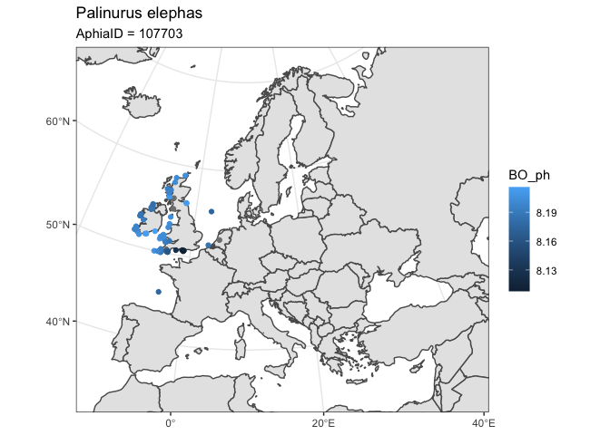

The goal of OBIShmpr is to link and query OBIS occurence data with a variety of marine habitat data.
Data Sources
-
Bio-ORACLE & MARSPEC data accesed through
sdmpredictors:a set of GIS rasters providing geophysical, biotic and environmental data for surface and benthic marine realms. Accessed via
sdmpredictors -
sedmapsSynthetic map of the NW European Shelf sedimentary environmentdata product 10.15129/1e27b806-1eae-494d-83b5-a5f4792c46fc 0.125◦ by 0.125◦ resolution synthetic maps of continuous properties of the north-west European sedimentary environment. The maps are a blend of gridded survey data, statistically modelled values based on distributions of bed shear stress due to tidal currents and waves and bathymetric properties.
- percentage compositions of mud, sand and gravel;
- porosity and permeability;
- median grain size of the whole sediment and of the sand and the gravel fractions;
- carbon and nitrogen content of sediments;
- percentage of seabed area covered by rock;
- mean and maximum depth-averaged tidal velocity and wave orbital velocity at the seabed; and mean monthly natural disturbance rates.
EMODnet Seabed Habitat maps
Installation
You can install the development version from GitHub with:
An example with one species
This is an example of how to run the above code for a single species - we use Scytothamnus fasciculatus, Aphia ID 325567, chosen as it has just 6 OBIS records so should run reasonably quickly.
Choose some layers to extract data from
sp_id <- 325567
layers <- c("BO2_nitratemax_bdmin", "BO_parmax", "BO2_tempmax_bdmax", "permeability",
"tidal_vel_max", "april")obis_match_habitat(sp_id, layers = layers)
#> Simple feature collection with 6 features and 16 fields
#> geometry type: POINT
#> dimension: XY
#> bbox: xmin: -65 ymin: -48.65 xmax: 173.7005 ymax: -40.7
#> epsg (SRID): 4326
#> proj4string: +proj=longlat +datum=WGS84 +no_defs
#> # A tibble: 6 x 17
#> scientificName aphiaID maximumDepthInM… id minimumDepthInM… eventDate depth
#> <chr> <int> <lgl> <chr> <lgl> <chr> <dbl>
#> 1 Scytothamnus … 325567 NA 079a… NA <NA> NA
#> 2 Scytothamnus … 325567 NA 45b1… NA <NA> NA
#> 3 Scytothamnus … 325567 NA 6761… NA <NA> NA
#> 4 Scytothamnus … 325567 NA 99b4… NA <NA> NA
#> 5 Scytothamnus … 325567 NA cbf1… NA <NA> NA
#> 6 Scytothamnus … 325567 NA dd42… NA 1945/09/… NA
#> # … with 10 more variables: year <chr>, month <chr>, depth0 <dbl>,
#> # geometry <POINT [°]>, BO2_nitratemax_bdmin <dbl>, BO_parmax <dbl>,
#> # BO2_tempmax_bdmax <dbl>, permeability <lgl>, tidal_vel_max <lgl>,
#> # april <lgl>layer_codes <- c("BO_ph", "BO_phosphate",
"BO2_phosphatemean_bdmax",
"BO_nitrate", "BO2_nitratemean_bdmax",
"surface_nitrogen", "tn", "surface_carbon",
"BO_sstmean", "BO_sstmin", "BO_sstmax",
"MS_biogeo13_sst_mean_5m", "MS_biogeo14_sst_min_5m",
"MS_biogeo15_sst_max_5m")Palinurus elephas
Next I use the AphiaID for Palinurus elephas.
species_id <- worrms::wm_name2id("Palinurus elephas")
data <- OBIShmpr::obis_match_habitat(
sp_id = species_id,
layers = layer_codes,
geometry = bbox_nwes)
#> Retrieved 96 records of approximately 96 (100%)✓ `obis_recs` successfully converted to sf
#> ✓ `obis_recs` crs: 4326, +proj=longlat +datum=WGS84 +no_defs
#> ✓ `obis_recs` crs: 4326, +proj=longlat +datum=WGS84 +no_defs
data
#> Simple feature collection with 96 features and 24 fields
#> geometry type: POINT
#> dimension: XY
#> bbox: xmin: -10.60808 ymin: 45.59042 xmax: 4.95983 ymax: 58.92086
#> epsg (SRID): 4326
#> proj4string: +proj=longlat +datum=WGS84 +no_defs
#> # A tibble: 96 x 25
#> month year scientificName aphiaID maximumDepthInM… id eventDate
#> <chr> <chr> <chr> <int> <dbl> <chr> <chr>
#> 1 08 1992 Palinurus ele… 107703 NA 039f… 1992-08-…
#> 2 07 2003 Palinurus ele… 107703 NA 0a5a… 2003-07-…
#> 3 05 2010 Palinurus ele… 107703 NA 0a88… 2010-05-…
#> 4 07 1977 Palinurus ele… 107703 NA 0b6f… 1977-07-…
#> 5 06 1981 Palinurus ele… 107703 NA 0e4d… 1981-06-…
#> 6 05 2010 Palinurus ele… 107703 NA 0f0d… 2010-05-…
#> 7 08 2009 Palinurus ele… 107703 NA 1041… 2009-08-…
#> 8 07 2009 Palinurus ele… 107703 NA 109e… 2009-07-…
#> 9 08 1988 Palinurus ele… 107703 NA 14f4… 1988-08-…
#> 10 07 2011 Palinurus ele… 107703 NA 17f1… 2011-07-…
#> # … with 86 more rows, and 18 more variables: minimumDepthInMeters <int>,
#> # depth <dbl>, depth0 <dbl>, geometry <POINT [°]>, BO_ph <dbl>,
#> # BO_phosphate <dbl>, BO2_phosphatemean_bdmax <dbl>, BO_nitrate <dbl>,
#> # BO2_nitratemean_bdmax <dbl>, surface_nitrogen <dbl>, tn <dbl>,
#> # surface_carbon <dbl>, BO_sstmean <dbl>, BO_sstmin <dbl>, BO_sstmax <dbl>,
#> # MS_biogeo13_sst_mean_5m <dbl>, MS_biogeo14_sst_min_5m <dbl>,
#> # MS_biogeo15_sst_max_5m <dbl>library(ggplot2)
world <- rnaturalearth::ne_countries(scale = "medium", returnclass = "sf")
ggplot() +
geom_sf(data = world) +
geom_sf(data = data, aes(color = BO_ph) ) +
coord_sf(crs = 3035,
xlim = c(2426378.0132, 7093974.6215),
ylim = c(1308101.2618, 5446513.5222)) +
theme_bw() +
ggtitle("Palinurus elephas",
subtitle = paste0('AphiaID = ', species_id))